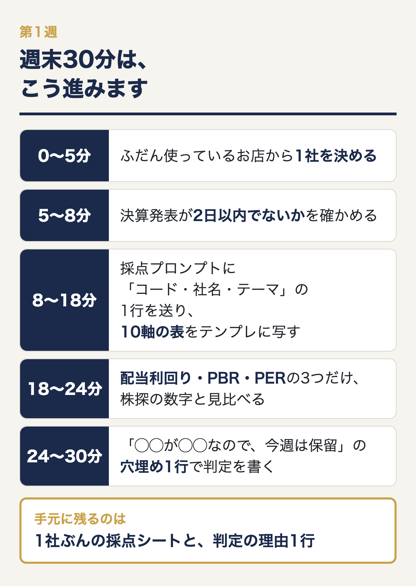
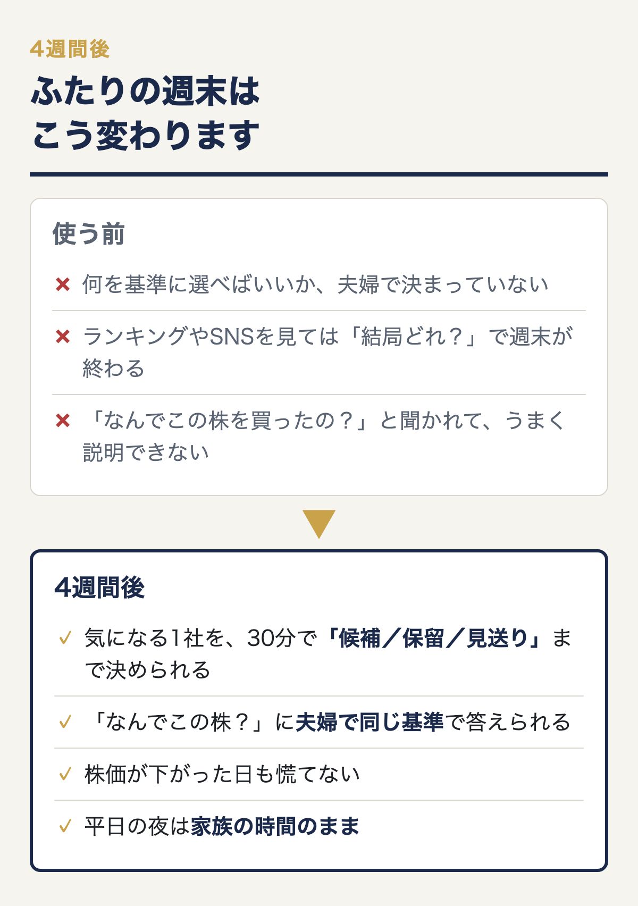
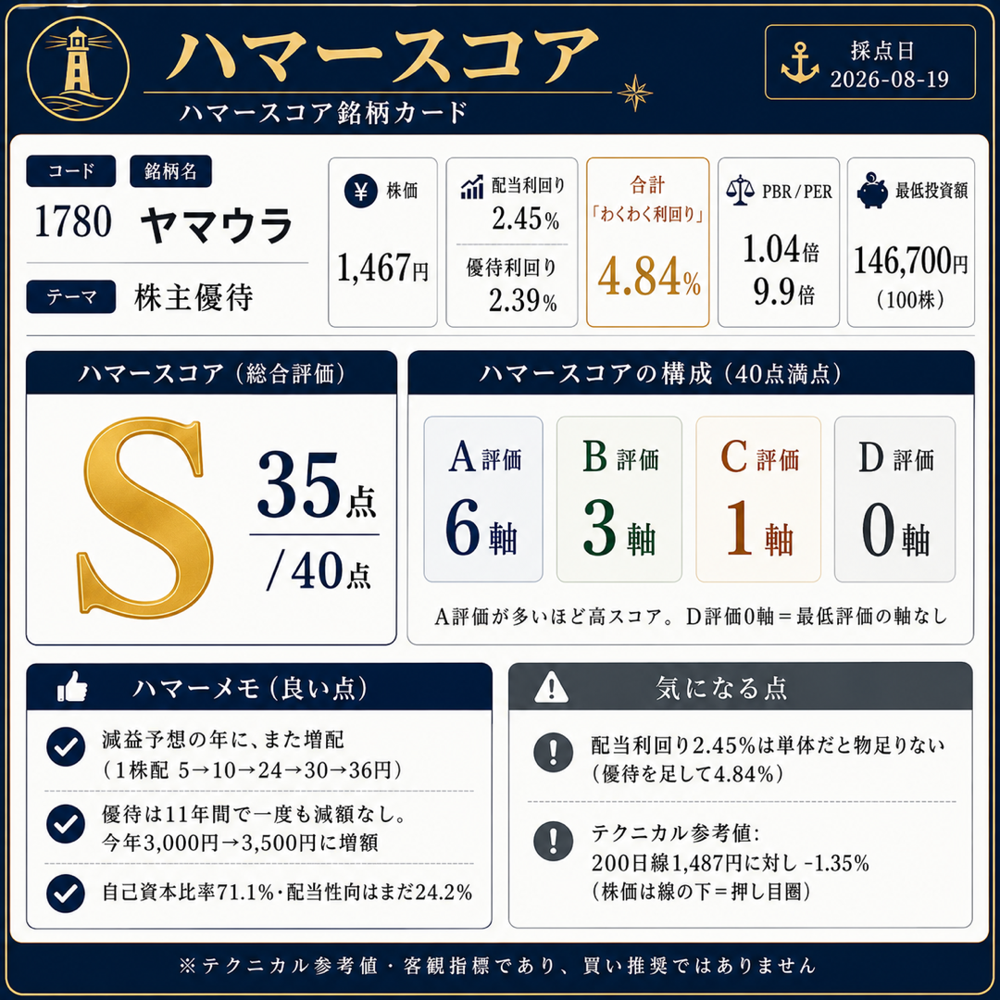
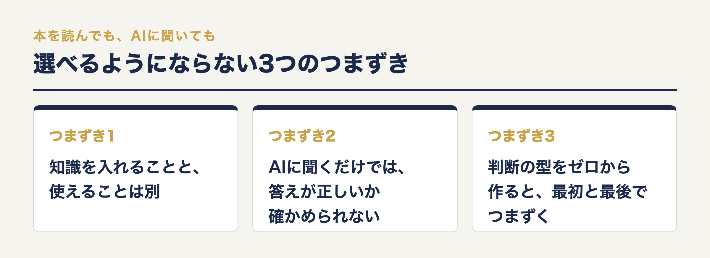
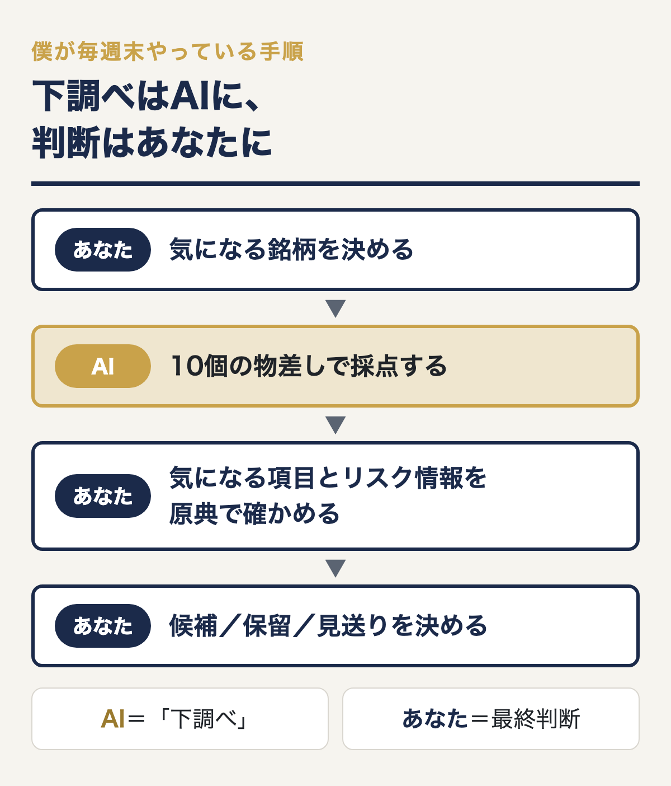
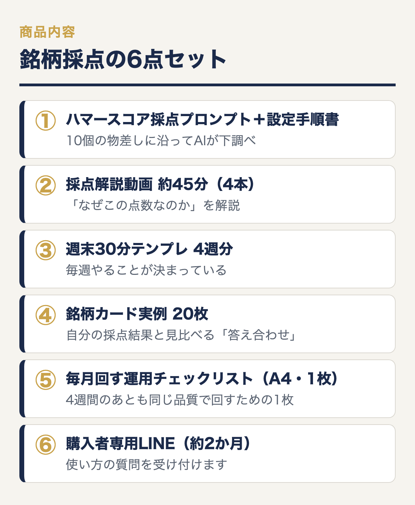

開発版5銘柄すべてで作者の判断と一致した10軸採点を、あなたの週末に。
もう「で、結局どれを選べばいいの？」で止まらない。
人のおすすめではなく、自分の物差しで候補を絞れるようになる。
週末30分×4回。平日は何もしなくてOK。
プロンプトをコピペするだけで、
共働きで忙しいふたりでも、日本株を「候補／保留／見送り」に整理できる
6つの実践ツール＆教材です。
【専門用語の暗記不要】【有料データ契約不要】【スマホかPC＋AI1つでOK】
〜「おすすめ銘柄」を探し続けているあなたへ〜
利回りランキングやSNSには、魅力的に見える銘柄があふれています。
でも、眺めれば眺めるほど「結局どれを選べばいい？」と迷ってしまいませんか？
僕も平日は本業で手いっぱいです。
だから、調べる時間を増やすのではなく、週末30分で判断材料を整理できる仕組みを作ってきました。
ただし、これはAIに「買う株」を決めてもらう商品ではありません。
AIには下調べを任せ、原典も確認しながら、最後はあなた自身が判断するための道具です。
何が違うのか。ここから先でお話しします。
まずはこちらをご覧ください。
▼ ▼ ▼
開発版では、ゼンリン、三菱重工、イオン、イオンモール、すかいらーくの5銘柄を採点し、5銘柄すべてで僕の判断と一致しました。
さらに、イオンモールの上場廃止に伴う優待の消滅や、すかいらーくの過去の優待改悪まで拾うことができました。
ランキングを何時間も見比べなくても、
プロンプトをコピペするだけで、
10個の物差しから「候補／保留／見送り」を考えるための判断材料がまとめて出てきます。
配布版では、ChatGPT・Claude・Geminiのどれで動かしても判定がそろうことを、2026年9月に確かめました。


気になる銘柄を決めて、採点プロンプトをAIで動かすだけで、
これらをまとめて出してくれます。

終わったとき手元に残るのは、1社ぶんの採点シートと、判定の理由1行です。
僕が自分で試したときは、東急（9005）で22分でした。結果は28点のB、判定は「優待利回りが低いので保留」です。

では、なぜ僕がこのやり方にたどり着いたのか。
改めまして、ハマーです。
ここまで読んでいただき、ありがとうございます。
少しだけ自己紹介をさせてください。
僕は本業でメーカーの研究開発職として働きながら、限られた時間の中で投資を続けてきました。
そこで得た知識や経験をKindle本にまとめ、出版した本はすべてAmazonベストセラーになりました。
といっても、専業投資家でも証券会社出身でもありません。
平日は普通に会社へ行って、本業の仕事をこなし、限られた時間で投資を続ける。
ごく普通の会社員です。
そんな僕には、ひとつ大きな悩みがありました。
「投資って、調べることが多すぎる……」
誤解のないように言うと、投資そのものが嫌いなわけではありません。
自分で企業を調べて、自分なりに判断することは面白い。だからこそ続けてきました。
でも、平日は本業だけで手いっぱいです。
気になる銘柄があっても、決算、指標、優待、配当、割安かどうか、リスク情報まで一つずつ確かめていたら時間が足りない。
ようやく調べ始めても、専門用語と情報の多さに「結局、何を見ればいいんだ？」となってしまう。
「毎回ゼロから調べていたら、続かないな……」
そう感じたときに使い始めたのが、AIでした。
AIに投資判断そのものを任せるのではなく、面倒な「下調べ」を任せればいいのでは？
そう考えたところから、僕の銘柄選びへの考え方は180度変わりました。
今は、平日は本業に集中し、週末に30分だけ時間を作って銘柄を採点しています。
AIが整理した情報を見ながら、必要なところだけ会社のIR資料などの原典で確かめる。
毎週末、同じ流れで回せるようになりました。
① 採点で先に決めていた株を、決めた条件で買った
2026年8月19日、ヤマウラ（1780）を採点して35点（S）。
株価が200日線の上に戻ったところで、9月1日に100株を買いました。
買う理由は採点で先に決まっていたので、迷う時間はありませんでした。

② 売る値段を前日に決めて、翌日そのとおりに売れた
積水樹脂（4212）は、売る値段を前の日に決めて指値を置き、翌日9月3日にその値段で売れました。
実現損益は +35,525円（税引前）です。
③ 決めていたのに、注文を置かずに買い逃した
東京ラヂエーター製造（7235）は、買い増しの値段を1,501円と決めていましたが、指値を置いていなかったため、株価がそこまで下がった日に買えませんでした。
同じ週、指値を置いていたオリジナル設計（4642）は、決めた値段で買えています。
正直に書くと、持っている株の中には含み損のものもあります。
このキットは「必ず勝てる方法」ではありません。
「何を見て、いつ動くか」を先に決めておくことで、迷う時間と、その場の思いつきの売買を減らすための道具です。
※銘柄名は僕自身の売買の記録で、購入をすすめるものではありません。
検索すれば毎日のように「高配当株ランキング」「おすすめ優待株」「割安株◯選」が出てきます。
それでも「結局どの銘柄を見ればいいの？」「何を基準に選べばいいの？」と迷っている人は多いと思います。
実は僕自身、最初から効率よく銘柄を選べていたわけではありません。
気になる銘柄を見つけては調べ、別の銘柄が気になればまた調べる。
時間だけが過ぎて「結局どれなんだ？」となることもありました。
情報が増えれば増えるほど、「何を見て、どう判断するのか」という物差しがない人は迷いやすくなります。
AIもランキングも、自分の判断材料を整理する道具として使えなければ、情報に振り回されるだけです。
AIを使うようになって感じているのは、これです。
「忙しい人ほど、調べる作業と判断する作業を分けたほうがいい。」
下調べまで全部自分でやろうとすると、時間が足りなくなります。
下調べをAIに任せれば、人は「確かめて判断すること」に時間を使えます。

決算書、財務指標、バリュエーション、チャート、優待制度。
仕事をこなしながら、これを全部一から勉強するのはなかなか厳しいですよね。
だから多くの人は、投資本やKindle、noteなどの教材を買います。
誰かが時間をかけて整理した知識を、効率よく学べる「ショートカット」だからです。
それでも、「教材を買ったのに、自分で銘柄を選べるようになっていない」という人は少なくありません。
理由ははっきりしていて、知識を入れることと、実際に使えることは別だからです。
学んだ知識を目の前の銘柄に当てはめて「自分ならどう判断するか」を考えるには、別の練習が要ります。
平日に時間のない共働き夫婦には、その練習の時間がありません。
ただ、実際にAIを使ってみると、こんな壁に当たりませんか？
僕も「AIに何を任せて、人がどこを判断するのか」を整理するまで、試行錯誤してきました。
大事なのは、「AIに銘柄を聞くこと」と「AIを使って銘柄を調べること」はまったく違うということです。
AIは誤った情報を出すことがありますし、最新の情報や大事な条件を取りこぼすこともあります。
「この株は買いですか？」と丸投げして、出てきた答えを信じてそのまま売買する。
僕はそんな使い方をおすすめしません。
ただ、これをゼロから始めようとすると、最初の「10個の物差しを作って、何を調べさせるか」でつまずきます。
最後の「AIの回答のどこを原典で確かめ、どう判断するか」でも迷います。
見るべき物差しと検算の手順がなければ、どんなに便利なAIでも「自分で選べる状態」にはなかなか近づけません。
たとえば、ランキングやSNSで気になる日本株を1社見つけたとします。
「この銘柄、本当に候補にしていいのかな？」と感じたら、10個の物差しを組み込んだ採点プロンプトでAIに調べさせる。
すると、10軸の採点、S〜Dの総合評価、候補／保留／見送りを考える材料が整理されます。
高配当株なら「なぜ利回りが高いのか」、割安株なら「本当に安いのか」を確かめ、上場廃止・TOB・優待改悪などのリスク情報もチェックする。
散らばった資料を集めて、見るべき場所ごとに机の上へ並べてくれる調査アシスタント。
スマホかPCと、AIが1つあれば始められます。
AIが得意なのは、大量の情報を探して、決められた物差しに沿って整理する「下調べ」です。
実際にお金を投じるかどうかの最終判断は、あなた自身が行います。
カーナビが道を案内してくれても、ハンドルを握るのは運転手。
AIと人の間にも、同じ役割分担があります。
僕が毎週末やっている手順はこうです。
気になる銘柄を決める → 10個の物差しでAIに採点させる → 気になる項目とリスク情報を原典で確かめる → 自分で候補／保留／見送りを決める

このキットは、この3つのつまずきを1つずつ埋めるために作りました。
AIには「判断」ではなく「下調べ」を任せる。
調べる項目と基準さえ決めてあげれば、AIは忙しいふたりにとって頼れる調査アシスタントになります。
このキットは、10個の物差しに沿ってAIに下調べをさせ、その結果を原典で確かめながら、最後は自分で判断する仕組みです。
銘柄リストを渡して終わる教材とは、ここが違います。
僕は今も、このプロンプトで毎週末に銘柄を採点しています。
開発中の版では5銘柄を検証し、5銘柄すべてで僕自身の判断と一致しました。
何を見て「候補」に残し、何を見て「保留」「見送り」と考えるのか。
その基準を、採点プロンプト、解説動画、4週間のテンプレ、20枚の実例、運用チェックリストに落とし込んでいます。
採点プロンプトは、10軸の採点、S〜Dの総合評価、候補／保留／見送りを考える材料、上場廃止・TOB・優待改悪などのリスク情報を、情報源のリンク付きで整理します。
さらに約45分の採点解説動画で、実際の銘柄を使って「なぜこの点数なのか」を解説します。
AIの答えを鵜呑みにせず、どこを原典で確かめればいいのかがわかるようになります。
「投資経験がほとんどない自分にできるかな……」と思った方もいるかもしれません。
自分で銘柄を選べるようになるには、知識を増やすだけでなく、実際の銘柄で判断する練習が必要です。
いくら本を読んでも、銘柄を目の前にすると「で、どこを見ればいいんだ？」となる。
それは知識がないからではなく、「何を、どんな順番で確かめるか」という型がまだないからです。
その型をゼロから作ろうとすると、見る指標を決め、調べ方を覚え、毎回同じ品質で確かめる仕組みまで自分で用意しなければいけません。
このキットなら、有料データ契約も複雑なExcelの自作も要りません。
好きなときに、何度でも同じ基準で下調べをやり直せます。
銘柄を調べるたびに、ゼロから「何を見よう？」と迷わなくて済みます。
週末に気になる1社を開いて、10個の物差しで採点し、必要な情報を原典で確かめて、自分なりの判断を残す。
5週目からは、誰かの「おすすめ」を待たずに、同じ手順を自分で繰り返せます。
※将来の投資成果を保証する商品ではありません。AIによる下調べと、投資判断の型を学ぶための教材・ツールです。AIの出力には誤りがありうるため、会社のIR資料などの原典を確かめ、最終的な投資判断はご自身で行ってください。
では、このキットに何が入っているのか。中身を順番にお見せします。
4週間、週末30分ずつ実際の銘柄を採点しながら、「何を、どんな順番で確かめるのか」を身につけます。

気になる日本株を入力すると、僕が普段使っている10個の物差しに沿ってAIが下調べをします。
これらを、情報源のリンク付きで整理します。
ChatGPT・Claude・Geminiのどれか1つがあれば使えます。
実際の銘柄の採点結果をスライドで映しながら、「なぜこの点数なのか」「どこを確かめればいいのか」をAI音声で解説します（解説の中身は僕がまとめたものです）。
AIの点数をもらって終わりにせず、その根拠を原典で確かめる見方が身につきます。
毎週やることが決まっているので、「今週は何をするんだっけ」がなくなります。
S〜Dまで、実際に採点した出力サンプルを20枚。
自分の採点結果と見比べる「答え合わせ」に使えます。
特定の銘柄をおすすめするリストではありません。

4週間のあとも同じ品質で回すための1枚です。

「評価が高ければ何でも候補にする」判断にならないための確認項目をまとめています。
プログラム中から翌月末まで、使い方の質問を受け付けます。
平日にいただいた質問に、数日以内を目安に僕が返信します。
なお、「この株を買っていいですか？」といった個別の売買判断にはお答えしません。
自分で銘柄を判断するための知識をゼロから身につけるには、かなりの時間がかかります。
投資スクールや個別指導の中には、10万円、30万円、それ以上するものもあります。
でも、そこまでのお金や時間をかけられる家庭ばかりではありません。
だからこそ、ランキングやSNSの「おすすめ」を見ては、同じところで止まってしまう人が多いのだと思います。
僕は、本業や家族との時間を大切にしながら投資を続けたい人にこそ、自分で確かめて判断する型を持ってほしいと思っています。
このキットには、僕が試行錯誤してきた10軸の判断基準、AIの使い方、原典で確かめるための考え方を詰め込みました。
これだけの仕組みをゼロから自分で作る時間まで考えれば、5万円、10万円でもおかしくない内容だと思っています。
それでも、平日は仕事や家事、子育てで忙しい共働き夫婦にこそ使ってほしい。
そこで、6点セットの「週末30分 銘柄採点キット」を
19,800円（税込・買い切り・月額なし）
でご案内します。
さらに、先着10名の方に限り、早割価格 14,800円（税込） でご案内します。
先着10名に達したあとは、通常価格に戻ります。
※このキットは、将来の利益や値上がりを保証するものではありません。AIは下調べを補助する道具で、出力には誤りが含まれることがあります。重要な情報は会社のIR資料などの原典でご自身でも確かめ、最終的な投資判断はご自身で行ってください。
※返金についてはBrainの規定に準じます。
Q. ChatGPTに課金していなくても使えますか？
はい。無料プランでも使えます。ChatGPT・Claude・Geminiのどれか1つがあれば大丈夫です。より精度を高めたい場合は、ChatGPT有料プランの思考モードをおすすめしています。
Q. 投資経験がほとんどないのですが、大丈夫ですか？
大丈夫です。第1週は身近な優待銘柄を1社選んで、プロンプトに沿って採点するところから始めます。専門用語を最初からすべて覚える必要はありません。
ただし、証券口座を持っていて、少額でも実際に売買する意思があることが前提です。
Q. このキットで何ができるようになりますか？
「何を見ればいいかわからない」状態から、自分で銘柄の判断材料を整理できるようになります。
10個の物差しでの採点と、AIの出力を鵜呑みにせず原典で検算する流れを、4週間かけて実践します。
Q. 本業や家事、子育てで忙しいです。時間がなくてもできますか？
はい。平日にまとまった時間が取れない共働き夫婦にこそ使ってほしいキットです。週末30分×4週間で進められるよう、毎週やることをテンプレにまとめています。
Q. 購入代金以外にお金はかかりますか？
通常19,800円、先着10名は早割14,800円の買い切りです。月額料金はありません。AIは無料プランでも使えるので、有料プランへの課金は任意です。
Q. 期限はありますか？
ありません。買い切りなので、4週間が終わったあとも何度でも見返せます。
Q. 返金保証はありますか？
返金はBrainの規定に準じます。購入前に商品内容をご確認のうえ、お申し込みください。
Q. 具体的にどう使えばいいですか？
気になる日本株を選び、プロンプトをAIに設定して採点するところから始めればOKです。4週間分のテンプレと解説動画に沿って、順番に進めてください。
AIの評価をそのまま売買判断に使うものではありません。重要な情報は原典でも確かめ、最終判断はご自身で行ってください。使い方で迷ったら、購入者専用LINEでサポートします。
Q. このキットを使えば、必ず良い銘柄を選べますか？
将来の利益や値上がりを保証するものではありません。AIにも誤りはありえます。10軸の採点と原典の確認で、自分で判断材料を整理するためのキットです。
Q. 値下げの予定はありますか？
通常価格は19,800円です。先着10名の方のみ、早割価格14,800円でご案内しています。
Q. どんな人には向いていませんか？
「今すぐ上がる銘柄を教えてほしい」方、短期売買・デイトレのシグナルがほしい方、手を動かさずに結果だけがほしい方には向いていません。
逆に、自分の手で確かめながら選べるようになりたい方には、きっと役立つはずです。
このキットには、平日は本業で働きながら僕が作ってきた、銘柄を調べる手順、10個の物差し、AIを使った下調べの仕組みを詰め込みました。
週末30分ずつ実際に銘柄を採点し、AIの出力を原典で確かめる。
それを繰り返せば、「何を見ればいいかわからない」状態から少しずつ抜け出し、5週目からも自分で回せる判断の型が身についていきます。
「自分で銘柄を選ぶ力」は、身につければ来月も、その先も使えます。
ここまで読んでくれたあなたには、忙しくても自分で納得して銘柄を選べるようになりたい、という気持ちがあるはずです。
あとは4週間、僕と一緒に実際の銘柄を採点して、下調べと原典確認の流れを身につけるだけです。
「自分で判断材料を整理できるようになりました！」
そんな報告が届くのを待っています。
ハマー
追伸1
僕は専業投資家でも証券会社出身でもありません。平日はメーカーの研究開発職として働く、ごく普通の会社員です。
だから「毎日何時間も企業分析する」やり方は続きませんでした。
週末30分なら続けられる。
AIに下調べを任せても、最後の判断まではAIに任せない。
そのために作ったのが、この「週末30分 銘柄採点キット」です。
追伸2
通常価格は19,800円。先着10名の方のみ、早割14,800円でご案内しています。
先着10名に達したあとは、通常価格に戻ります。
買い切りなので月額料金はなく、5週目以降も何度でも使えます。
「おすすめ銘柄を教えてもらう」のではなく、「自分で判断材料を整理できるようになる」。
そんな投資の仕組みを作りたい方は、ここから始めてみてください。
▶ 「週末30分 銘柄採点キット」で、自分で銘柄を検討できる4週間を始める